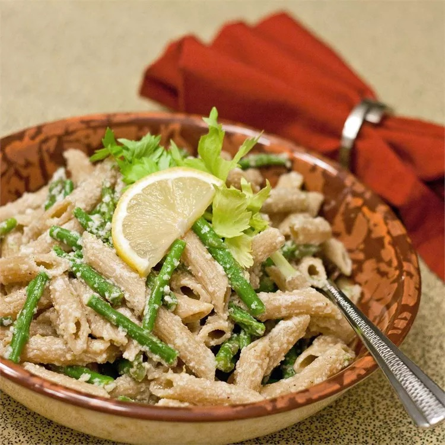

Lemon Asparagus Pasta

Description
This appetizing asparagus pasta dish is flavored with lemon zest and lemon juice. It's easy to make and can sit out during warm weather. Can be served hot, warm, or cold.
Ingredients
- 1 (16 ounce) package penne pasta
- 1 pound fresh asparagus, trimmed and cut into 2-inch pieces
- 1 large lemon, zested and juiced
- 1 cup grated Parmesan cheese
- ½ cup olive oil
- salt to taste
- freshly cracked black pepper to taste
Steps
-
Fill a large pot with lightly salted water and bring to a boil. Stir in penne and return to a boil.
Cook pasta uncovered, stirring occasionally, for about 8 minutes. Penne will still be slightly firm.
-
Stir asparagus into the pot with the boiling penne pasta and bring back to a boil;
cook until pasta is tender and asparagus is softened but still bright green, about 3 more minutes. Drain pasta and asparagus.
-
Place penne and asparagus into a large bowl; lightly stir in lemon zest, lemon juice,
Parmesan cheese, olive oil, salt, and black pepper until thoroughly combined.
Return Home